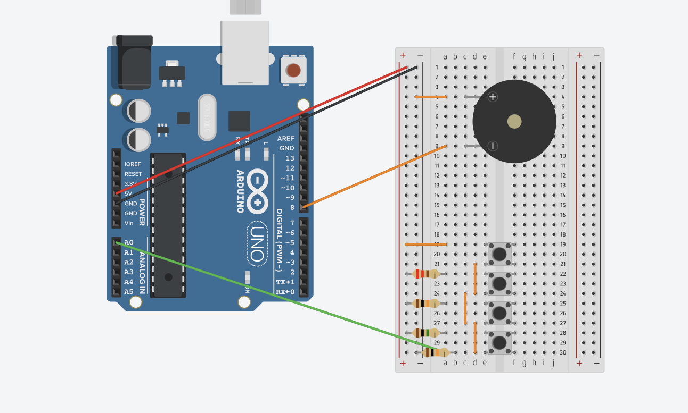
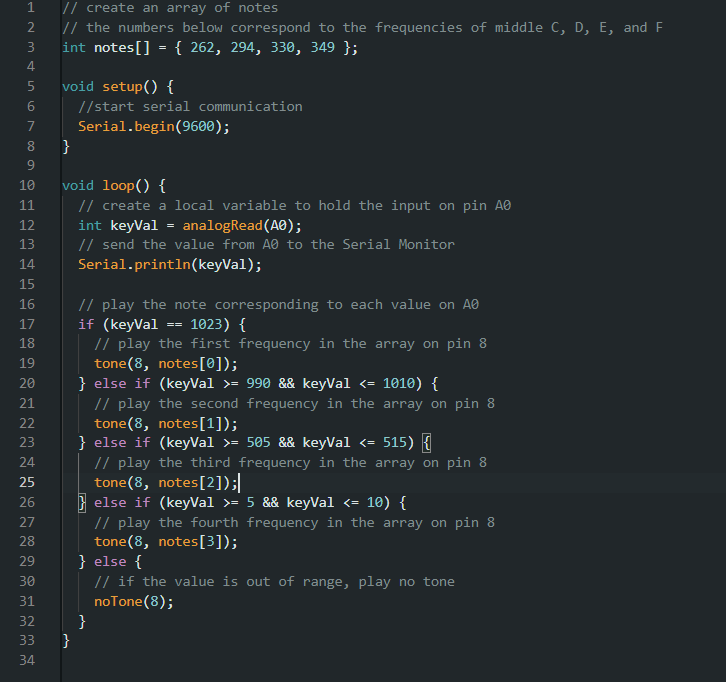

Arduino HW 7 - Keyboard Instrument
IGME 470
The Keyboard Instrument assignment builds upon the concepts from the Light Theremin, taking sound generation with Arduino to the next level. Instead of using a sensor to control pitch, this project creates a musical keyboard using pushbuttons. Each button plays a different pitch through the piezo speaker.
The parts used:
- 1x Piezo Speaker
- 4x Buttons
- Resistors for pitch distinction

The code reads the state of each button and uses the tone() function to play proper sounds on the piezo speaker.
I talk a lot about how the Arduino is similar to things from Minecraft in my blog posts, but this project really reminded me of the note blocks from Minecraft, where each block plays a different pitch / chord when activated. This project was a fun way to create a simple musical instrument and further explore sound generation with Arduino.
